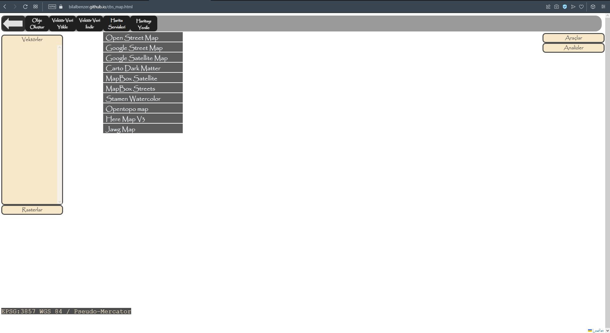

- 01.03.2022-Web Tasarımına Başlanıldı
- 30.03.2022-Harita Servisleri Kullanılabilir Hale Getirildi
- 25.04.2022-Nokta Objesi Eklenebilir, Düzenlenebilir, Simge Verilebilir, Öznitelik Eklenebilir Hale Getirildi
- 20.05.2022-Farklı Koordinasyon Sistemleri Entegresi Yapıldı. Geliştirmeler Devam Edecek...
- 15.06.2022-Çoklu Nokta Objesi Oluşturma,Haritada Gizleme, Gösterme,Yaklaşma Tamamlandı
- 15.06.2022-Çoklu Noktalar İçin Haritada Obje Seçerek Düzenleme Özelliği Geliştirilmeye Başlanıldı.
- 16.06.2022-Nokta Objesinin Düzenlenmesinde Koordinat Girerek Düzenleme İşlevi Güncellendi
- 17.06.2022-Çoklu Nokta İçin Düzeltmeler ve Geliştirmeler Yapıldı
- 20.06.2022-Çoklu Nokta katmanında Fare İle Nokta Taşıma İşlevi Tamamlandı
- 20.06.2022-Çoklu Nokta Katmanında Manuel Koordinat Girerek Nokta Taşıma İşlevi Tamamlandı
- 24.06.2022-Çoklu Nokta Katmanında Seçilen Noktaların Silme İşlemi Tamamlandı
- 27.06.2022-Çoklu Nokta Katmanında Öznitelik Tablosunun Görüntülenmesi, Kolon ve Nitelik Eklenmesi/Silinmesi/Özellikleri Görme İşlemlerine Başlanıldı
- 29.06.2022-Çoklu Nokta Katmanında Öznitelik Tablosu İle İlgili İşlemler(Nitelik Ekleme,Düzenleme,Silme,Kolon Ekleme,Düzenleme) Tamamlandı
- 04.07.2022-Çoklu Nokta Katmanında Özniteliğe Bağlı Renge ve Büyüklüğe Göre Sınıflandırma İşlemi Tamamlandı
- 07.07.2022-Çoklu Nokta Katmanında Url ve Yerel Simgeleri Obje Stili Olarak Ayarlama Tamamlandı.Simge Büyüklüklüklerinin Değiştirilmesi Geliştirilmekte
- 25.07.2022-Çoklu Nokta Katmanı İle İlgili İşlemler Tamamlandı
- 26.07.2022-Çoklu Çizgi İçin Geliştirmelere Başlanıldı
- 29.07.2022-Çoklu; Çizgi Çizimi, Haritada Gösterme-Gizleme,Katman Düzenleme(köşe noktası silme,Ara Nokta Ekleme ve Kaydırma) Geliştirildi
